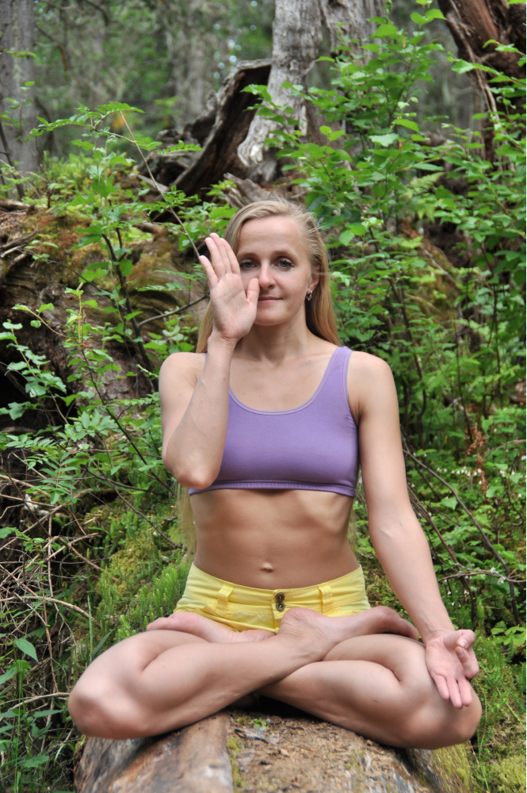
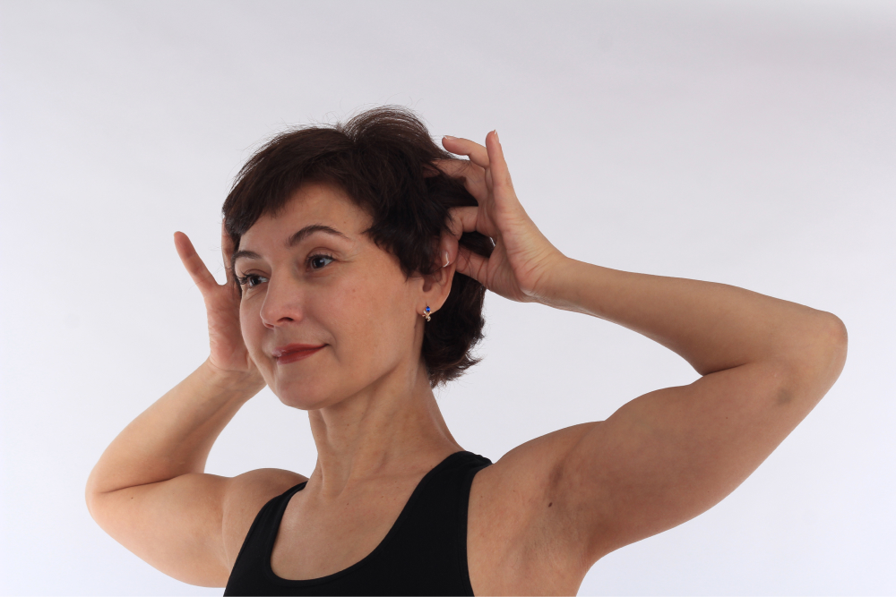

Мы то, что мы едим
Правильное питание - это основа здорового образа жизни. Сбалансированный рацион, богатый питательными веществами, витаминами и минералами, помогает поддерживать организм в оптимальном состоянии. Важно включать в свой рацион достаточное количество свежих фруктов, овощей, цельнозерновых продуктов, нежирных белков и здоровых жиров. Избегайте переработанных, высококалорийных и богатых сахаром продуктов. Пейте достаточное количество воды и ограничивайте потребление алкоголя. Правильное питание не только улучшает физическое здоровье, но и положительно влияет на ментальное состояние и энергетический баланс. Следуя принципам здорового питания, вы сможете поддерживать оптимальный вес, повысить иммунитет и улучшить общее самочувствие.

Йога в контексте светского общества
Часто приходится слышать от людей, что йога в современном мире вредна, что она делает человека флегматичным и апатичным. Человек якобы перестает адекватно реагировать на жизнь, у него пропадает интерес к высоким заработкам, и именно это, мол, плохо. С одной стороны, успешность человека в современном мире в большинстве случаев ассоциируется с внешним лоском и величиной кошелька, а если этого нет, то человек получает клеймо «неудачника». С другой стороны, очень часто можно увидеть людей, занимающихся йогой, которые действительно стали апатичны к жизни, ведут полу бомжовый образ жизни и при этом считают себя достигшими высшей степени духовности, а остальных — глупцами.